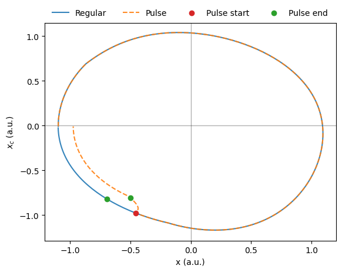

dt = 0.1 # hours
days = 20
time = np.arange(0, 24 * days, dt)
regular_lux = 500
schedule = LightSchedule.Regular(regular_lux, lights_on=8, lights_off=24)
light_input = schedule(time)
model_list = [Forger99(), Jewett99(), Hannay19(), Hannay19TP()]
equilibrium_states = []
for model in model_list:
time_eq = np.arange(0, 24 * days, dt)
final_state = model.equilibrate(time_eq, light_input, num_loops=2)
equilibrium_states.append(final_state)Circadian rhythm disruptions
Light exposure is one of the main factors affecting circadian rhythms. Here we use the circadian package to explore the effects of light pulses at different times of the day. We will explore this effect using four different circadian models Forger99, Jewett99, Hannay19, and Hannay19TP and compare the results among them.
Entraining models to a regular light schedule
First, we entrain each model to a regular light schedule to have a baseline to compare to. In circadian we do this by
Pulse during the day
Next, we can explore how models respond to lights pulse during the bright hours of the day. We can use the LightSchedule.from_pulse function to add pulses at different times
days = 3
time = np.arange(0, 24 * days, dt)
pulse_num = 6
pulse_lux = 1e4
pulse_duration = 1 # hour
start_values = np.linspace(32, 47, pulse_num)
simulation_result = {}
for idx,model in enumerate(model_list):
simulation_result[str(model)] = {}
for pulse_start in start_values:
schedule = LightSchedule.Regular(regular_lux, lights_on=8, lights_off=24)
schedule += LightSchedule.from_pulse(pulse_lux, pulse_start, pulse_duration)
light_input = schedule(time)
trajectory = model(time, equilibrium_states[idx], light_input)
simulation_result[str(model)][str(pulse_start)] = {
'light': light_input,
'trajectory': trajectory
}We see that light pulses during bright hours don’t have a major effect on circadian rhythms. However, this is not the case for light pulses during darkness.
Pulse at night
Using the same code as above but with different pulse start values
start_values = np.linspace(24, 31, pulse_num)gives us the following
Models are more sensitive to pulses during the dark hours of the day, the sinusoidal signal changes abruptly when the pulse is applied. This reflects an important property of circadian rhythms: their sensitivity to light is dependent on the current phase of the clock. We can calculate how much the phase of the clock changes after a pulse by constructing a phase response curve (PRC).
Building phase response curves
To build a phase response curve we need to calculate how much the phase of the clock changed after the pulse ended with respect to an unperturbed clock. We can do this the following way
from circadian.utils import phase_differencemodel = Forger99()
days = 3
time = np.arange(0, 24 * days, dt)
pulse_lux = 1e4
pulse_start = 25 # hours
pulse_duration = 1 # hour
regular_schedule = LightSchedule.Regular(regular_lux, lights_on=8, lights_off=24)
pulse = LightSchedule.from_pulse(pulse_lux, pulse_start, pulse_duration)
pulse_schedule = regular_schedule + pulse
regular_light = regular_schedule(time)
pulse_light = pulse_schedule(time)
regular_trajectory = model(time, equilibrium_states[0], regular_light)
pulse_trajectory = model(time, equilibrium_states[0], pulse_light)
pulse_end = pulse_start + pulse_duration
regular_phase = model.phase(regular_trajectory, pulse_end)
pulse_phase = model.phase(pulse_trajectory, pulse_end)
phase_diff = phase_difference(regular_phase, pulse_phase)Phase difference: -0.16 radiansThis negative value means that the pulse delays the clock. We can visualize this by comparing the state of the clock before and after the pulse

Here we can also observe that the amplitude of the clock is reduced after the pulse. To calculate this we do the following
from circadian.utils import amplitude_percent_changeregular_amplitude = model.amplitude(regular_trajectory, pulse_end)
pulse_amplitude = model.amplitude(pulse_trajectory, pulse_end)
amplitude_change = amplitude_percent_change(regular_amplitude, pulse_amplitude)Amplitude change: -12.40%So the pulse both delays the clock and reduces its amplitude. We can now calculate the phase response curve by repeating this process for different pulse times. We will also store the amplitude change information for the following section.
days = 2.5
dt = 0.02 # hours. We need a smaller dt to get a smooth phase response curve
time = np.arange(0, 24 * days, dt)
pulse_num = 150
pulse_lux = 1e4
pulse_duration = 1 # hour
start_values = np.linspace(24, 48, pulse_num)
for idx,model in enumerate(model_list):
simulation_result[str(model)] = {
'cbtmin': np.NaN,
'phase_response': [],
'amplitude_response': [],
}
# create the reference trajectory
regular_schedule = LightSchedule.Regular(regular_lux, lights_on=8, lights_off=24)
regular_light = regular_schedule(time)
regular_trajectory = model(time, equilibrium_states[idx], regular_light)
# calculate cbt to use as pulse start time reference
cbtmin = model.cbt(regular_trajectory)[1]
simulation_result[str(model)]['cbtmin'] = cbtmin
for pulse_start in start_values:
schedule = LightSchedule.Regular(regular_lux, lights_on=8, lights_off=24)
schedule += LightSchedule.from_pulse(pulse_lux, pulse_start, pulse_duration)
light_input = schedule(time)
pulse_trajectory = model(time, equilibrium_states[idx], light_input)
pulse_end = pulse_start + pulse_duration
regular_phase = model.phase(regular_trajectory, pulse_end)
pulse_phase = model.phase(pulse_trajectory, pulse_end)
phase_diff = phase_difference(regular_phase, pulse_phase)
simulation_result[str(model)]['phase_response'].append(phase_diff)
regular_amplitude = model.amplitude(regular_trajectory, pulse_end)
pulse_amplitude = model.amplitude(pulse_trajectory, pulse_end)
amplitude_change = amplitude_percent_change(regular_amplitude, pulse_amplitude)
simulation_result[str(model)]['amplitude_response'].append(amplitude_change)
# convert phase differences from radians to hours
period = 24.2 # hours
for model in model_list:
phase_response = simulation_result[str(model)]['phase_response']
phase_response = np.array(phase_response) * period / (2 * np.pi)
simulation_result[str(model)]['phase_response'] = phase_responseThis is the phase response curve for four different models. On the y-axis we have how much the phase of the circadian clock changes when the pulse ends. Positive values mean the clock is advanced with respect to an unperturbed case. On the x-axis we have the pulse end time relative to the core body temperature minimum (CBTmin). When the pulse ends close to CBTmin (x-axis value of 0) the phase of the clock is maximally advanced. On the contrary, when the pulse ends five hours before CBTmin, the clock is delayed the most. The overall shape of the response is similar between models.
Building amplitude response curves
Our previous simulation shows that not only the phase of the clock changes after a pulse, but also its amplitude. We already calculated the amplitude change in the previous section so we can plot the result
The models still have a similar response: all of them show a decrease in amplitude four hours before CBTmin. However, the magnitude of change in amplitude varies between them. For a more detailed discussion we refer the reader to Hannay et al. (2019).